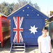
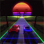
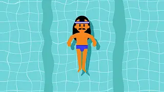
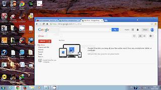

Contributing to Open Source Part I: The Easy Way
49,520 views
How do you contribute to open source? In this video, I'll describe the easiest way to make a simple contribution to an open source project -- without using the command line, a text editor, "forking a repo", or even touching Git outside of Github. I'll also describe what kinds of contributions open
SHOW MORE
SHOW MORE
12 Comments

Wing N. 1 year ago (edited)
"use your powers for good"
haha thank you for the video.
haha thank you for the video.
REPLY

ButtonMasher 3 years ago
Wow this video was super helpful, clear, and concise.
Thank you very much.
Thank you very much.
REPLY
Sibe Cute 2 years ago
"thanks a lot for video
REPLY
andrewscheuermann05andrewscheuermann05 4 years ago
"FYI: the edit button has changed to a diagonal pencil
REPLY
Sampath Lokuge 3 years ago
Nice.Thanks a lot :)
REPLY
Luyi Ren 1 year ago (edited)
"Your video helped me try to make my first contribution! Thank you so much!
REPLY
David Godfrey 1 year ago
"What if the project is huge and the issues involve things
you don't even understand?
you don't even understand?
REPLY
Philip Gouldman 1 year ago
"This video didnt help. I see it was uploaded 3 years ago but I wonder if that
would really matter. I'm trying to submit my solution to the Ruby: Ceasar
Cypher project but can't really figure out how to do it....it's on my Github repository
repository entitled Odin-Project. help :(
would really matter. I'm trying to submit my solution to the Ruby: Ceasar
Cypher project but can't really figure out how to do it....it's on my Github repository
repository entitled Odin-Project. help :(
REPLY
1newbbie 9 months ago
"A remark to what happening at 04:12 is: after clicking "Propose file change",
it now goes to commit page instead of the pull request screen as shown on
repository entitled Odin-Project. help
the video. One need to click the commit name (e.g. patch-1 if it is the first
commit of your branch) near the top of the screen to go to the pull request
screen.
it now goes to commit page instead of the pull request screen as shown on
repository entitled Odin-Project. help
the video. One need to click the commit name (e.g. patch-1 if it is the first
commit of your branch) near the top of the screen to go to the pull request
screen.
REPLY
Richard Dickinson 4 years ago
"I am working through the Odin Project which is good but it took me ages to
figure out how to submit my solution to the HTML/CSS project.I posted in all
places (on the Odin website, on Google+ and others) and I finally got a reply
(thanks hgducherne). However I'm still waiting for the repo admin to accept
my pull request, so this has been a slow, tedious process as my first
introduction to contributing on GitHub. Shame I didn't see this video earlier
and I hope my pull request is dealt with soon.....
figure out how to submit my solution to the HTML/CSS project.I posted in all
places (on the Odin website, on Google+ and others) and I finally got a reply
(thanks hgducherne). However I'm still waiting for the repo admin to accept
my pull request, so this has been a slow, tedious process as my first
introduction to contributing on GitHub. Shame I didn't see this video earlier
and I hope my pull request is dealt with soon.....
REPLY
schneems schneems 1 year ago
"Apps can help people get started contributing too. I recommend
https://www.codetriage.com
https://www.codetriage.com
REPLY
Roshan Jossey 1 years ago
"I've started on a project to help beginners to get started on contributing to
open source projects. It's a hands-on tutorial to learn the general workflow in
github. Check it out at https://github.com/Roshanjossey/first-contributions
open source projects. It's a hands-on tutorial to learn the general workflow in
github. Check it out at https://github.com/Roshanjossey/first-contributions
REPLY
Up Next
World Tycoon
Geronotopolus
30k views
Geronotopolus
30k views
Learn to Swim like me (INsanelyFast)
Aaron Rory
300 views
Aaron Rory
300 views
Land Topology
Abner
900 views
Abner
900 views
Desktop Troubles
Angelino Joelee
21k views
Angelino Joelee
21k views
 Coding through Life
Coding through LifeTMNTBros
13k views